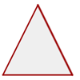
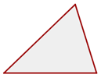
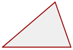
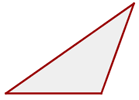
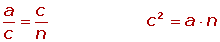
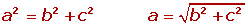
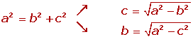
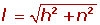
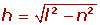
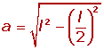

Triángulos
Resumen de triángulos
- Propiedades
- Clasificación
- Elementos
- Teorema de Pitágoras
Propiedades de los triángulos
Definición de triángulo: Un triángulo es un polígono de tres lados.
Propiedades de los triángulos:
1 Un lado de un triángulo es menor que la suma de los otros dos y mayor que su diferencia.
2 La suma de los ángulos interiores de un triángulo es igual a 180°.
3 El valor de un ángulo exterior es igual a la suma de los dos interiores no adyacentes.
Clasificación de los triángulos
1 Según sus lados:
Triángulo equilátero
Tres lados iguales
Triángulo isósceles
Dos lados iguales
Triángulo escaleno
Tres lados desiguales
2Según sus ángulos
Triángulo acutángulo
Tres ángulos agudos
Triángulo rectángulo
Un ángulo recto.
El lado mayor es la hipotenusa.
Los lados menores son los catetos.
Triángulo obtusángulo
Un ángulo obtuso.
Elementos notables en los triángulos
1 Alturas de un triángulo:
Altura es cada una de las rectas perpendiculares trazadas desde un vértice al lado opuesto (o su prolongación).
2 Ortocentro:
Es el punto de corte de las tres alturas.
3 Medianas de un triángulo:
Mediana es cada una de las rectas que une el punto medio de un lado con el vértice opuesto.
4 Baricentro:
Es el punto de corte de las tres medianas.
El baricentro divide a cada mediana en dos segmentos, el segmento que une el baricentro con el vértice mide el doble que el segmento que une baricentro con el punto medio del lado opuesto.
5 Mediatrices de un triángulo
Mediatriz es cada una de las rectas perpendiculares trazadas a un lado por su punto medio.
6 Circuncentro
Es el punto de corte de las tres mediatrices.
Es el centro de una circunferencia circunscrita al triángulo.
7 Bisectrices de un triángulo
Bisectriz es cada una de las rectas que divide a un ángulo en dos ángulos iguales.
8 Incentro
Es el punto de corte de las tres bisetrices.
Es el centro de una circunferencia inscrita en el triángulo.
9 Recta de Euler
El ortocentro, el baricentro y el circuncentro de un triángulo no equilátero están alineados; es decir; pertenecen a la misma recta, llamada recta de Euler.
Fórmulas del teorema de Pitágoras
1 Teorema del cateto:

2 Teorema de la altura:
3 Teorema de Pitágoras:


4 Diagonal del cuadrado:
5 Diagonal del rectángulo:
6 Lado oblicuo del trapecio rectángulo:

7 Altura del trapecio isósceles:


8 Altura del triángulo equilátero:
9 Apotema de un polígono regular:
10 Apotema del hexágono inscrito:

11 Lado de un triángulo equilátero inscrito:
12 Lado de un cuadrado inscrito: